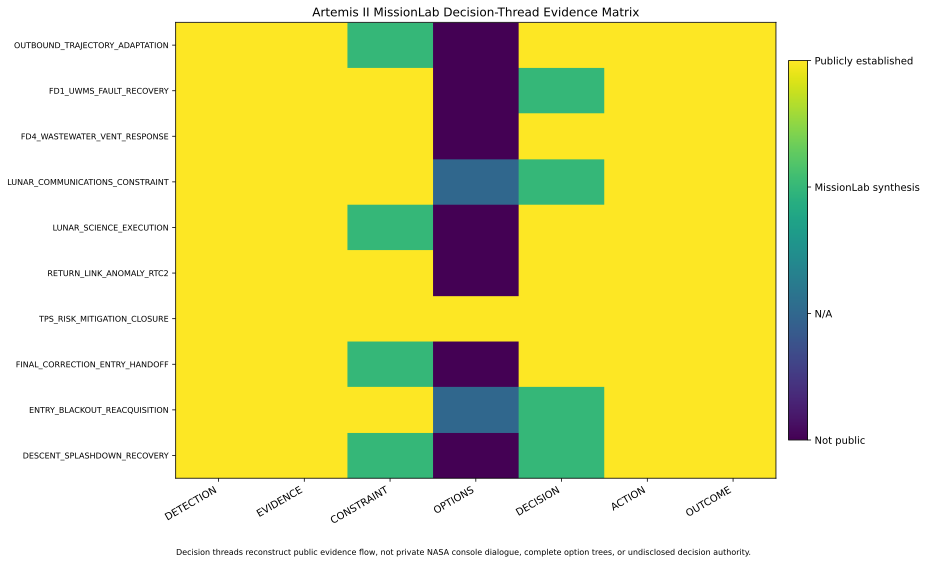

Mission Control
Think across the mission, not just one subsystem.
Step through public mission scenarios from the perspective of Flight Director, flight dynamics, timeline, crew systems, communications, science, and engineering support.
Mission Control simulator
You are FLIGHT. Integrate the room.
Choose a public Artemis II situation, inspect how different disciplines frame it, then follow the evidence-aware operational trace. This does not imitate private NASA screens or fabricate voice loops.
You are the integrator. Start at FLIGHT, then inspect the supporting console lenses. The challenge is deciding whether the event is expected, safety-critical, trajectory-relevant, or simply something to monitor without overreacting.
New to Mission Control? Meet the room.Each console watches a different slice of the same mission.
Integrates the room and decides what the mission team needs to do next.
Owns the trajectory picture, maneuver targeting, and future geometry.
Protects the flight plan, crew timeline, procedures, and real-time replanning.
Watches life support, thermal conditions, consumables, and emergency response.
MissionLab shorthand for link, network, blackout, and reacquisition questions.
Integrates lunar science and geology objectives with real-time mission execution.
MissionLab synthesis view for technical evidence and model limits, not a claimed front-room console name.
How decision reconstruction works without private transcriptsdetection → evidence → constraints → options → action → outcome
Evidence-aware operations analysis
MissionLab reconstructs public decision threads from NASA reporting and technical context. It does not fabricate controller dialogue or ownership. A troubleshooting step is not a confirmed root cause, and one event following another does not prove causation.
Open the decision-reconstruction deep dive →